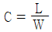
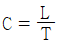
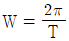
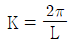
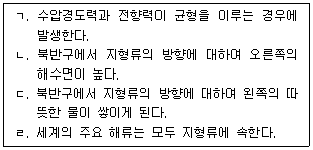
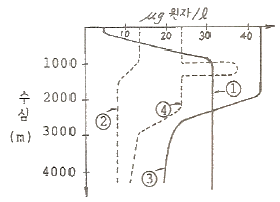
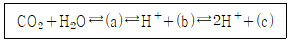
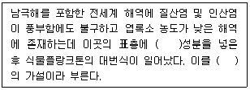
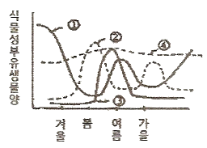

해양조사산업기사 (2013-06-02 기출문제)
1과목: 물리해양학
1. 다음 중 해류에 의해 이동되는 해수의 특징이 아닌 것은?
- 수색, 투명도
- 수온
- 염분
- 파고
(정답률: 74%)

2. 계절 수온 약층이 가장 잘 형성되는 시기는?
- 봄
- 여름
- 가을
- 겨울
(정답률: 87%)
3. 깊이 100m와 200m 사이의 평균 현장빙요이 0.998cm3/g 이라면 이 두 깊이 사이의 역학적 심도는?
- 100.2 dynamic meter
- 99.8 dynamic meter
- 1002.0 dynamic meter
- 998.0 dynamic meter
(정답률: 90%)
4. 기조력 계산에 포함되는 원심력은?
- 지구-달의 공통 질량중심에 대한 공전
- 지구에 대한 달의 공전
- 달에 대한 지구의 공전
- 지구의 자전
(정답률: 82%)
5. 파의 주기(T), 파장(L), 파속(C), 각주파수(W), 파수(wave number, K)의 관계로 옳지 않은 것은?




(정답률: 75%)
6. 우리나라 근해에 영향을 미치는 한류는?
- 쿠로시오
- 리만 해류
- 쓰시마 해류
- 황해 난류
(정답률: 86%)
7. 대양에서 저층수의 주 근원지는?
- 태평양
- 인도양
- 지중해
- 남극해
(정답률: 89%)
8. 심해파에 있어서 가장 측정하기 쉬운 성질은?
- 파장
- 주기
- 파고
- 전파속도
(정답률: 67%)
9. 다음 중 해류 측정 기기가 아닌 것은?
- ADCP
- HF radar
- drifter
- CTD
(정답률: 84%)
10. 하구(Estuar)에서 상·하층의 전류시각이 서로 달라지는 이유에 대한 설명 중 옳은 것은?
- 하구폭의 변화
- 하구수심의 변화
- 마찰
- 염분 성층
(정답률: 75%)
11. 다른 해역에 비해 조류가 강한 네 곳 중 조류가 강한 이유가 다른 한 해역은?
- 인천
- 울돌목
- 노량해협
- 맹골수도
(정답률: 89%)
12. 연중 거의 일정한 방향, 일정한 강도의 바람이 부는 무역풍에 의한 해류는?
- 적도 해류
- 적도 반류
- 쿠로시오
- 북태평양 해류
(정답률: 74%)
13. 해수가 관성운동을 한다고 가정하면, 위도 45도에서 속도 0.1m/s 일 때 관성원의 반경은?
- 1km
- 0.5km
- 10km
- 20km
(정답률: 53%)
14. 지형류에 대한 옳은 설명을 모두 짝지은 것은?

- ㄱ, ㄷ
- ㄴ, ㄹ
- ㄱ, ㄴ, ㄹ
- ㄱ, ㄷ, ㄹ
(정답률: 71%)
15. 한 개의 위성에 의하여 조석이 일어나고 바다로 덮인 어느 행성이 있다. 행성의 하루는 24시간, 위성의 공전주기는 96시간 이라면, 이 행성에서 만조와 다음 만조사이의 시간 차이는?
- 12시간
- 16시간
- 24시간
- 48시간
(정답률: 61%)
16. 다음 중 동해안에 용승을 일으킬 수 있는 바람은?
- 동풍
- 서풍
- 남풍
- 북풍
(정답률: 85%)
17. 지진해파에 대한 설명 중 옳은 것은?
- 발생한 시점에는 심해파였으나 해안으로 접근하면서 천해파로 변형된다.
- 심해에서 해안으로 접근할수록 주기가 짧아진다.
- 해안으로 접근하면서 파속이 급격히 증가한다.
- 해안에서 파고가 급격히 증가하는 이유는 수심이 얕아지기 때문이다.
(정답률: 89%)
18. 표면 수온의 관측에 잘 이용되지 않는 것은?
- 복사 온도계
- 봉상 온도계
- 전도 온도계
- 전기(저항)온도계
(정답률: 73%)
19. 수괴를 분류하는데 가장 많이 사용되는 물리량은?
- 수온, 압력
- 염분, 산소
- 수색, 탁도
- 수온, 염분
(정답률: 90%)
20. 다음 중 해류의 흐름을 직접 일으키는 힘은?
- 자전의 전향력
- 바람의 응력
- 원심력
- 마찰력
(정답률: 81%)
2과목: 화학해양학
21. 해양 생물의 제한 원소(Bioilmiting elements)가 되지 않는 것은?
- N
- P
- K
- Si
(정답률: 74%)
22. 다음의 방사성 핵종 중 인공물질이 아닌 것은?
- 3H
- 90Sr
- 137Cs
- 222Rn
(정답률: 69%)
23. 염분의 측정방법이 아닌 것은?
- 밀도에 의한 방법
- 염소도에 의한 방법
- 윙클러 아지드법을 이용한 방법
- 전기전도도에 의한 방법
(정답률: 79%)
24. 다음 그림에서 대양에서의 질산염의 수직분포도를 나타내는 것은?

- ①
- ②
- ③
- ④
(정답률: 80%)
25. 14C에 의한 심층수의 연령측정 결과 1회에 해양대순환에 걸리는 시간은?
- 약 700년
- 약 1600년
- 약 2900년
- 약 3500년
(정답률: 78%)
26. 해수 중 pH에 대한 설명에 잘못된 것은?
- 해수의 온도가 10℃ 증가할 때 pH는 0.0003 만큼 감소한다.
- 광합성이 왕성한 해역은 CO2가 감소하므로 pH가 증가한다.
- 수중의 탄산가스가 증가하면 pH는 증가한다.
- 황화물이 산화하면 pH는 감소한다.
(정답률: 79%)
27. 오염 물질이 바다로 유입되는 과정에서 해양오염의 비중이 가장 큰 기원은?
- 해양투기
- 해양사고
- 대기
- 강물
(정답률: 90%)
28. 해수에 이산화탄소가 용해할 때 일어나는 반응이다. ( )안의 내용이 순서대로 나열된 것은?

- (a) CO32-, (b) HCO3-, (c) CO32-
- (a) H2CO3, (b) HCO3-, (c) CO32-
- (a) CO32-, (b) H2CO3, (c) HCO3-
- (a) HCO3-, (b) H2CO3, (c) CO32-
(정답률: 75%)
29. 전 해양의 이산화탄소(CO2) 함량을 대기중의 총량과 비교하면 몇 배나 되는가?
- 40배 이하
- 40 ~ 50배
- 50 ~ 60배
- 60배 이상
(정답률: 75%)
30. 해수의 염분도가 증가됨에 따라 해수의 물리화학적 특성도 변한다. 다음 중 염분도의 증가와 가장 거리가 먼 것은?
- 전도도가 증가한다.
- 삼투압이 증가한다.
- 빙점이 상승한다.
- 굴절률이 증가한다.
(정답률: 81%)
31. 북태평양이 외양역에서 수직농도 분포가 수심 2000m 부근에서 최대값을 보이는 성분은?
- 질산염
- 인산염
- 규산염
- 탄산염
(정답률: 73%)
32. 해수의 주성분이 아닌 것은?
- SO4
- Pb
- Cl
- Ca
(정답률: 78%)
33. 다음 핵종 중 심해저 망간단괴에 성장속도 측정에 가장 많이 이용되는 것은?
- 228Th (반감기=1.9년)
- 210Pb (반감기=22년)
- 210Po (반감기=138년)
- 230Th (반감기=7.5×104년)
(정답률: 85%)
34. 바닷물에 가장 많이 녹아 있는 기체는?
- 질소
- 산소
- 이산화탄소
- 수소
(정답률: 71%)
35. 북대서양과 북태평양 심층수의 용존산소와 영양염의 농도를 비교하면?
- 북대서양에서 용존산소의 농도는 높고, 영양염 농도는 낮다.
- 북대서양에서 용존산소의 농도는 낮고, 영양염 농도는 낮다.
- 북태평양에서 용존산소의 농도는 높고, 영양염 농도는 낮다.
- 북태평양에서 용존산소의 농도는 낮고, 영양염 농도는 낮다.
(정답률: 73%)
36. 해수중에 용존하고 있는 화합물 중 생태계의 먹이사슬을 통하여 생물농축되지 않는 것은?
- 염화탄화수소
- 요소
- 메틸수은
- 무기방사성 핵종
(정답률: 81%)
37. 산화 환경이 해양에서 생물체의 사체 즉 유기물이 산화 분해될 때 각 구성성분(C:N:P:O)의 조성비(원자비, Redfield)는?
- 106 : 16 : 1 : -138
- 106 : 16 : 1 : -276
- 106 : 16 : 1 : 138
- 106 : 16 : 1 : 276
(정답률: 74%)
38. 해수의 COD 측정에 사용되는 시약은?
- KMnO4
- KlO3
- HCl
- MnCl2
(정답률: 86%)
39. 다음 중 해수중에 가장 많이 분포하고 있는 것은?
- H3PO4
- H2PO4-
- HPO42-
- PO43-
(정답률: 63%)
40. 유류가 해양에 유출되었을 때의 진행 과정으로 맞는 것은?
- 슬릭 형성-에멀젼화-증발-타르덩어리 형성-미생물분해
- 타르덩어리 형성-슬릭 형성-미생물분해-증발-에멀젼화
- 에멀젼화-타르덩어리 형성-미생물분해-슬릭 형성-증발
- 슬릭 형성-증발-에멀젼화-미생물분해-타르덩어리 형성
(정답률: 70%)
3과목: 생물해양학
41. 체장이 2~3cm 정도이며, 그 알은 보육낭에서 성체형까지 발생하는 연갑류 부유생물인 곤쟁이(Mysid)는 주로 어느 생물 종류의 천연먹이로 쓰이는가?
- 남조류
- 양서류
- 어류
- 조개류
(정답률: 88%)
42. 해양생물의 주된 질소 배설물의 형태는?
- 암모니아
- 요소
- 요소 및 요산
- 요산
(정답률: 76%)
43. 다음 중 해양 식물성 부유생물을 배양할 때 가장 적합한 pH는?
- 12
- 10
- 8
- 6
(정답률: 90%)
44. 다음 해양생물 중 분류학적으로 자포동물문(Phylum Cnidaria)에 속하지 않는 무리는?
- 해면
- 산호
- 말미잘
- 히드라
(정답률: 67%)
45. 해산 현화식물 생태계의 설명으로 가장 거리가 먼 것은?
- 난과 비슷한 모양으로 길고 얇은 잎과 줄기는 뿌리줄기로 성장한다.
- 주로 해수 유동이 강하여 수중 영양염의 공급이 좋은 곳에 밀생한다.
- 열대해역에는 거북풀(turtle grass)가 많고 잘피(eel grass)는 온대와 열대의 연성 저질에 잘 서실한다.
- 뿌리로 영양분을 흡수한다.
(정답률: 69%)
46. 하구역의 환경에 대한 설명으로 옳지 않은 것은?
- 형성요인에 따라 그 지형의 특성을 크게 해안평원 하구역, 구조하구역, 협만하구역, 반폐쇄석호하구역의 4가지로 구분한다.
- 하구역은 강으로부터 유입된 퇴적물입자 및 유기입자 등이 쌓여 조립질의 퇴적층을 형성한다.
- 연안역 중 담수와 해수가 만나는 강하구 수역이다.
- 하구역의 생물들은 대부분 광염성, 광온성 종들이다.
(정답률: 80%)
47. 다음 어류 중 측편형(側偏形)의 체형을 갖는 종류는?
- 참돔
- 가오리
- 양태
- 아귀
(정답률: 70%)
48. 부유생태계의 에너지 흐름에 있어서 가장 중요한 동물플랑크톤은?
- 물벼룩류
- 갯지렁이류
- 요각류
- 만각류
(정답률: 91%)
49. 다음 어류 중 강하성회유(catadromous migration)를 하는 어종은?
- 송어
- 뱀장어
- 은연어
- 방어
(정답률: 86%)
50. 플랑크톤이 온대지방의 바다에서 가장 번식에 나쁜 계절은?
- 봄
- 여름
- 가을
- 겨울
(정답률: 81%)
51. 해양에 서식하는 저서동물 중 서식밀도가 가장 높은 것으로 알려진 갯지렁이(다모류)에 대한 설명으로 가장 거리가 먼 것은?
- 외관상 체절이 없다.
- 몸은 좌우대칭이며, 긴 원통형이다.
- 대부분 부유성 담륜자 유생시기를 거친 후, 변태하여 저서생활을 시작한다.
- 유기물 오염이 심화된 해역에서 대량으로 서식하기도 한다.
(정답률: 82%)
52. 홍수림(맹그로브 숲)이 번성하는 환경은?
- 극지고산대
- 온대연안
- 열대연안
- 대양중앙부
(정답률: 88%)
53. 다음 ( )안에 공통적으로 알맞은 것은?

- 카드뮴
- 철
- 염소
- 이산화탄소
(정답률: 81%)
54. 해양생물을 채집하기 위해 사용하는 기구가 아닌 것은?
- 반돈 채수기(van Dorn water sampler)
- 그랩 채니기(Grab sampler)
- 봉고 네트(Bongo net)
- CTD
(정답률: 87%)
55. 다음 중 조간대(潮間帶)의 생태학적 특징이 아닌 것은?
- 건조되기 쉽다.
- 수온변화가 크다.
- 파도의 물리직 힘이 크게 작용한다.
- 광선이 언제나 부족하다.
(정답률: 95%)
56. 해산식물의 광합성에 대한 설명으로 옳지 않은 것은?
- 다양한 파장의 빛에너지를 활용하기 위하여 엽록소 외에 보조색소를 발달시킨다.
- 광합성률과 산소발생률이 일치하는 수심을 보상수심이라 한다.
- 엽록체 내의 틸라코이드에 위치하는 엽록소와 틸라코이드를 둘러싸고 있는 액체 스트로마가 광합성에 관여한다.
- 광합성을 통해서 일차적으로 만들어지는 유기물은 단당류인 포도당이며, 다당류인 녹말 형태로 변환시켜 체내에 저장한다.
(정답률: 73%)
57. 다음 중 공기호흡을 하는 종류에 속하지 않는 것은?
- 포유류
- 조류(鳥類)
- 파충류
- 원구류
(정답률: 84%)
58. 다음 그림 중 한대지방에서의 식물플랑크톤의 계절변화를 나타낸 곡선은?

- ①
- ②
- ③
- ④
(정답률: 83%)
59. 해양에서 부유생물의 유동은 해류의 흐름에 크게 의존하는데 이러한 회유를 무엇이라 하는가?
- 산란회유
- 유기회유
- 계절회유
- 색이회유
(정답률: 76%)
60. 다음 중 적조와 관련한 설명으로 옳지 않은 것은?
- 편모조류가 주원인 생물이다.
- 공장 및 도시 폐수가 하나의 원인이 될 수도 있다.
- 육수의 유입은 적조를 완화시킨다.
- 연안과 내만의 부영양화도 적조 유발에 관계된다.
(정답률: 80%)
4과목: 지질해양학
61. 제주도의 성인은?
- 화산활동
- 모래 퇴적
- 산호 퇴적
- 대륙분리
(정답률: 91%)
62. 심해저의 원양성 퇴적물은 크게 두 종류로 분류되는데, 그 두 종류란?
- 점토와 실트
- 모래와 연니
- 연니와 적점토
- 적점토와 실트
(정답률: 73%)
63. 대륙대(continental rise)에 대한 설명으로 틀린 것은?
- 경사는 대륙 대륙사면의 8분의 1정도로 완만하다.
- 대부분의 대양저의 서쪽 경계부의 심해의 해류는 대륙대의 모양을 결정하는 중요한 요인이 된다.
- 대륙대는 육지로부터 그리고 해저주변부로부터 운반된 퇴적물로 구성된 퇴적층이다.
- 대륙대는 태평양해저에 대단히 잘 발달되어 있다.
(정답률: 67%)
64. 해저확장과 관계되는 내용으로 틀린 것은?
- 오래된 해저지각이 맨틀 속으로 섭입되는 곳이 해구이다.
- 해저확장의 증거로는 변환단층, 열류량 등이 있다.
- 판구조론에 의하면 암석권은 약권위에서 맨틀의 열대류로 이동한다.
- 해저확장이란 지각이 방사능 물질의 열로 용해되기 때문에 가능하다.
(정답률: 88%)
65. 해저 지층에서 석유 및 가스를 많이 함유하는 저류 퇴적암은?
- 사암
- 증발암
- 쳐어트
- 이암
(정답률: 82%)
66. 심해저 퇴적물에 대한 설명으로 틀린 것은?
- 심해저 퇴적층은 대부분 수 km 두께로 발달되며 촉방으로 조직의 변화가 상당히 다양하다.
- 심해는 다른 여러 해양환경에 비해서 비교적 단조로워 수천평방 km에 걸쳐 퇴적된 물질의 성분은 거의 균일하다.
- 심해저 퇴적물에는 대륙주변부 또는 해류의 직접적인 영향을 받지 않는 것도 있다.
- 심해저 퇴적물에는 대륙주변부의 영향을 받아 육지기원의 퇴적물이 저탁류에 의해서 심해저에 도달하는 퇴적물도 있다.
(정답률: 71%)
67. 해파의 진행과 해양지형간의 관계에 대한 설명으로 틀린 것은?
- 해파의 굴절현상은 얕은 바다에서 해파의 일부분이 다른 부분보다 먼저 도착하기 때문에 생기는 현상이다.
- 해저가 깊은 바다 쪽으로 일정하게 경사된 경우 곶 부근은 바다가 얕기 때문에 만보다 훨씬 많은 양의 퇴적물이 퇴적한다.
- 해파는 해저의 영향을 받지 않는 부분이 더 빨리 움직이고 해파는 해안에 접근함에 따라 해안에 평행하게 된다.
- 곶에서는 해파의 에너지가 수렴되며 만에서는 에너지가 분산된다.
(정답률: 70%)
68. 다음 중 우리나라 근해에 분포하는 점토광물 중 가장 흔한 광물은?
- 고령석(kaolinite)
- 녹니석(chlorite)
- 일라이트(illite)
- 스멕타이트(smentite)
(정답률: 90%)
69. 물이 담긴 1000mL 메스실런더에 직경 5ø(phi)인 구형의 석영입자를 떨어뜨린 후, 10cm 가라앉는데 2분이 걸렸다면, 같은 상황에서 직경 6ø인 구형 석영입자를 떨어뜨릴 때 같은 깊이까지 가라앉는데 걸리는 시간은? (단, Stokes 침강 법칙에 의거 계산하시오)
- 8분
- 4분
- 15초
- 7.5초
(정답률: 53%)
70. 해저에 분포하는 망간 단괴가 주로 분포하는 곳은?
- 대륙붕
- 대륙사면
- 해저산맥
- 심해저 분지
(정답률: 85%)
71. 다음 중 해저퇴적물의 기원이 아닌 것은?
- 육상기원
- 생물기원
- 자생적 광물의 침전
- 식물의 광합성 작용
(정답률: 84%)
72. 해양에서 채취한 저질(퇴적물)을 분석할 때 주요 실험 대상이 아닌 것은?
- 입도분석
- 중력분석
- 물성분석
- 광물분석
(정답률: 72%)
73. 다음 중 수심이 가장 깊은 곳은?
- 해령
- 심해저 평원
- 해구
- 기요
(정답률: 93%)
74. 육지에서 바다 쪽으로의 일반적인 해저지형의 나열이 옳은 것은?
- 대륙붕→상부대륙대→대륙사면→하부대륙대
- 대륙붕→대륙사면→대륙대→심해평원
- 대륙붕→대륙대→대륙사면→심해평원
- 대륙사면→대륙대→대륙붕→심해평원
(정답률: 85%)
75. 대륙사면가 대륙붕의 경계부를 지칭하는 명칭은?
- 대륙경계
- 해양경계
- 대륙붕단
- 대륙대
(정답률: 84%)
76. Phi(ø) scale에 의한 퇴적물의 입도 표시 중 모래(sand)의 크기 범위로 가장 적합한 것은?
- -2ø 보다 조립
- -1 ~ 4ø
- 5 ~ 8ø
- 8ø 보다 세립
(정답률: 78%)
77. P파 에너지가 거의 도달하지 않는 지역인 음영대(shadow zone)는 진원으로부터 몇 도 위치에 존재하는가?
- 103 ~ 142°
- 143 ~ 175°
- 115 ~ 153°
- 125 ~ 163°
(정답률: 86%)
78. 다음 해양에 분포하는 육성기원 퇴적물 중 부유 상태로 파도나 해류에 의해 가장 먼 곳까지 운반되는 것은?
- 모래
- 점토
- 실트
- 잔자갈
(정답률: 79%)
79. 수렴형 판경계부 중 2개의 대륙판이 서로 충돌하여 형성된 지역은?
- 마리아나 해구
- 대서양 중앙해령
- 히말라야 산맥
- 산안드레아스 단층대
(정답률: 86%)
80. 심해저 망간단괴의 유용 금속 성분 중 경제성이 높은 성분이 아닌 것은?
- Cu
- Co
- Pb
- Ni
(정답률: 74%)